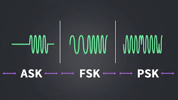
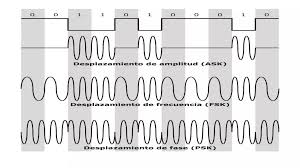

ASK, FSK, PSK y QAM son las principales técnicas de modulación digital. Cada una modifica un parámetro distinto de la portadora. Haykin señala que estas técnicas permiten adaptarse a diferentes condiciones de transmisión.
ASK varía la amplitud, FSK la frecuencia, PSK la fase y QAM combina amplitud y fase. Proakis explica que QAM es una de las técnicas más eficientes en términos de ancho de banda. Cada técnica presenta ventajas y desventajas en términos de complejidad y resistencia al ruido.


En conclusión, estas técnicas permiten seleccionar la modulación más adecuada según los requerimientos del sistema.